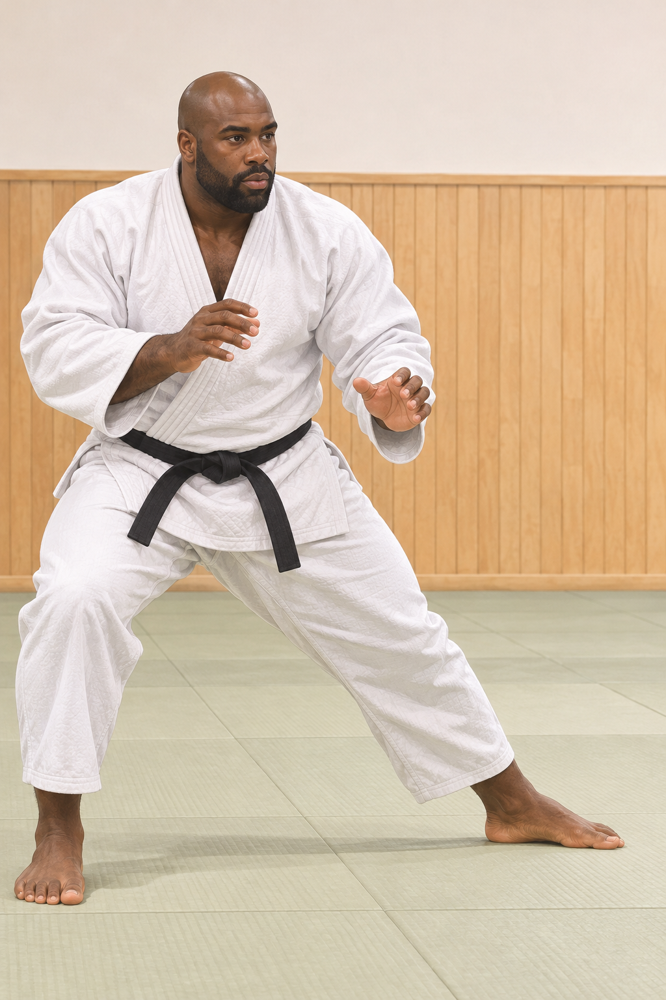

Teddy Riner commence le judo à Paris quand il est enfant. Il progresse vite et rejoint le haut niveau très jeune.
En 2007, il gagne son premier titre mondial à l'âge de 18 ans. Ce succès est le début d'une très longue carrière.
Il devient champion du monde à Rio de Janeiro. Il montre déjà sa force face aux meilleurs judokas.
Pendant presque dix ans, Teddy Riner ne perd aucun combat. Il enchaîne 154 victoires et reste la référence de sa catégorie.
À Doha, il remporte son onzième titre de champion du monde. Il confirme sa place dans l'histoire du judo.